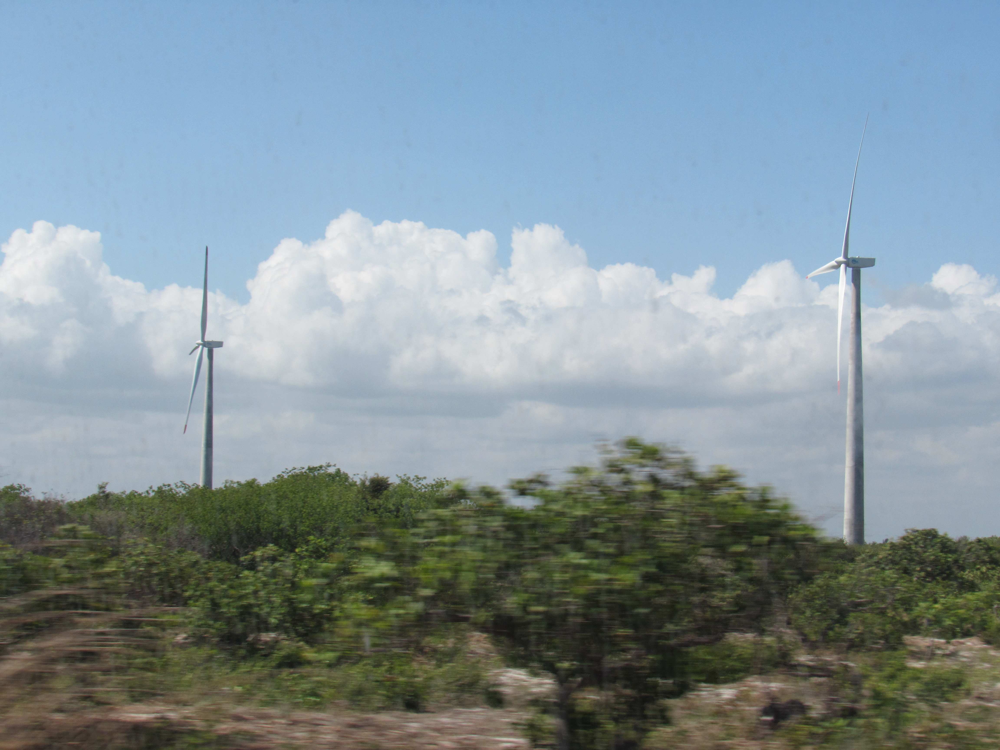

Detalhes do Evento 2
Data: 17 de Março, 2025
Local: Igreja Bíblica Batista
Descrição: Descrição detalhada do Evento 2. Inclua informações sobre o que acontecerá no evento, quem são os palestrantes ou líderes, e qualquer outra informação relevante.
Voltar para Eventos